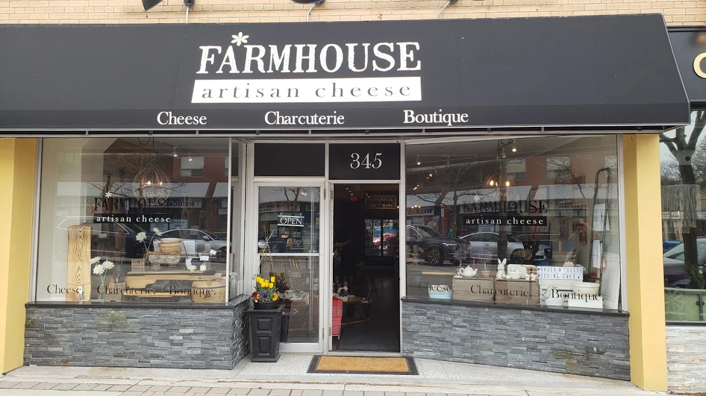

Everything you need to know about visiting our shop and exploring artisan cheese.
Located at 345 Kerr Street in Oakville, Ontario, Farmhouse Artisan Cheese is an in-store cheese shop focused on artisan and specialty cheeses from Canada and around the world.
We are open Tuesdays-Thursdays 11-5, Fridays 10-6 and Saturdays 10-6. Our hours may vary seasonally and so we encourage you to check our hours via a Google search of the store.
You can call us, send us an email or pre-order in the store. Many customers stop in to browse, ask questions, and build a selection in store. Pre-ordering is required for larger orders or gift boxes. Tell us what you need…we'll do our best to help!
Yes, parking is available behind the shop, metered parking is available on Kerr St and other paid parking is easily within walking distance.
Yes. Families are welcome, and we're always happy to help guests of all ages discover cheeses they'll enjoy.
Artisan cheeses are typically made in small batches using traditional methods, with an emphasis on quality, flavour, and craftsmanship. Many artisan cheeses reflect the region they're made in, the season, and the milk used, which means no two cheeses are exactly the same.
We carry a rotating selection of cheeses, some of which are artisan. You can find a wide selection of soft, semi-soft, firm, blue, and aged varieties. Our selection changes regularly based on seasonality and availability.
Yes. We proudly carry a range of Canadian cheeses and often feature Ontario producers alongside international selections.
Many traditional cheeses are naturally low in lactose due to how they are made and aged. While we don't label cheeses as lactose-free but we're happy to recommend options that are often well-tolerated by people with lactose sensitivity.
Aged and hard cheeses generally contain less lactose than fresh cheeses. Because lactose levels can vary, we recommend visiting the shop so we can guide you based on your preferences and tolerance.
Yes. We carry cheeses made without animal rennet. Availability changes, so we recommend asking in store for current options.
Our focus is on traditional artisan cheese. We do not stock dairy-free or vegan cheese alternatives, but we're happy to suggest accompaniments that work well for mixed-diet gatherings.
When possible, yes. We recommend contacting us in advance so we can discuss options and availability.
In addition to cheese, we carry a curated selection of accompaniments such as crackers, preserves, condiments, and specialty items chosen to pair well with our cheeses. Our selection changes seasonally.
Our gift boxes are curated selections of cheese and accompaniments, designed for gifting or hosting. They're available in different sizes and styles.
In many cases, yes. We recommend visiting the shop or contacting us in advance to discuss customization.
Yes. We can assist with corporate gifting and larger orders. Please contact us ahead of time so we can plan accordingly.
We deliver gift boxes and charcuterie boards within Oakville with a delivery fee of $15. For special requests or larger orders, please contact us to discuss options.
Yes. We're happy to help recommend cheeses for entertaining, events, or special gatherings.
If you're looking for a particular cheese, let us know. Availability depends on suppliers and seasonality.
For larger orders, events, or multiple gift boxes, we recommend contacting us 72 hours in advance. Additional time may be required during the Holidays.
If you don't see your question here, we invite you to visit us in store or get in touch. We're always happy to help you find the right cheese, gift, or selection for any occasion.